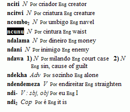
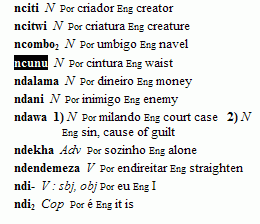

Setting up a new FieldWorks project
Translation Editor stores vernacular Scripture text in the same project used by other FieldWorks programs, for example, Language Explorer.
A FieldWorks project is a database that contains data and text related to a particular language and the people who speak it.
Here are examples of vernacular Scripture text in Translation Editor and lexical data in Language Explorer.
 
